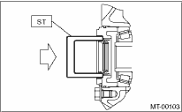
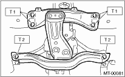
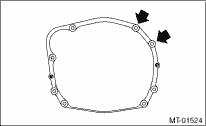
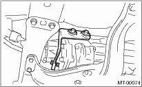
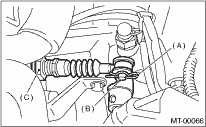

1. Replace the differential side retainer oil seal with a new part. 
NOTE:
Be sure to replace the differential side retainer oil seal after the removing the front drive shaft.

2. Install the rear cushion rubber to the transmission assembly.
Tightening torque:
35 N·m (3.6 kgf-m, 26 ft-lb)
3. Attach the clutch release lever and bearing to the transmission. (Turbo model)
4. Install the transmission onto the engine.
(1) Lift the transmission gradually using a transmission jack.
(2) Engage at the spline section.
NOTE:
Be careful not to hit the main shaft against the clutch cover.
5. Install the transmission rear crossmember.
Tightening torque:
T1: 70 N·m (7.1 kgf-m, 52 ft-lb)
T2: 140 N·m (14.3 kgf-m, 103 ft-lb)

6. Take out the transmission jack.
7. Tighten the bolts and nuts which hold lower side of transmission to the engine.
Tightening torque:
50 N·m (5.1 kgf-m, 37 ft-lb)

8. Connect the engine and transmission.
(1) Install the starter.
(2) Tighten the bolt which holds the right upper side of transmission to the engine.
Tightening torque:
50 N·m (5.1 kgf-m, 37 ft-lb)

9. Remove the ST.

10. Install the pitching stopper.
Tightening torque:
T1: 50 N·m (5.1 kgf-m, 37 ft-lb)
T2: 58 N·m (5.9 kgf-m, 43 ft-lb)

11. Lift the vehicle.
12. Install the front drive shaft into the transmission.
| ST 28399SA010 | FRONT DRIVE SHAFT OIL SEAL PROTECTOR |
13. Insert the ball joints of the lower arm into the housing, then tighten the installing bolts.
Tightening torque:
49 N·m (5.0 kgf-m, 36 ft-lb)
|
(A) |
Transverse link |
|
(B) |
Ball joint |
14. Attach the stabilizer link to the transverse link.
Tightening torque:
45 N·m (4.6 kgf-m, 33 ft-lb)
15. Attach the gear shift rod and stay.
(1) Attach the gear shift rod to the transmission.
Tightening torque:
12 N·m (1.2 kgf-m, 8.9 ft-lb)
|
(A) |
Stay |
|
(B) |
Gear shift rod |
(2) Attach the stay to the transmission.
Tightening torque:
18 N·m (1.8 kgf-m, 13.0 ft-lb)
16. Install the front vehicle height sensor.
17. Install the propeller shaft.
18. Install the hanger bracket on the right side of the transmission.

19. Install the rear exhaust pipe and muffler.
20. Install the front exhaust pipe and the center exhaust pipe. (Non-turbo model)
21. Install the center exhaust pipe. (Turbo model)
22. Install the under cover.
23. Install the operating cylinder.
Tightening torque:
37 N·m (3.8 kgf-m, 27.5 ft-lb)

24. Install the transmission drive select cable. (Dual range model)

|
(A) |
Snap pin |
|
(B) |
Clevis pin |
|
(C) |
Drive select cable |
25. Connect the following connectors.
(1) Transmission ground cable
Tightening torque:
13 N·m (1.3 kgf-m, 9.4 ft-lb)
(2) Vehicle speed sensor connector
(3) Neutral position switch connector
(4) Back-up light switch connector
(5) High-low switch connector (Dual range model)
26. Install the air cleaner case stay.
27. Install the air cleaner case and duct.
28. Install the intercooler. (Turbo model)
29. Fill transmission gear oil through the gauge hole.
30. Connect the battery ground cable to the battery.
31. Re-initialize the auto headlight beam leveler system.